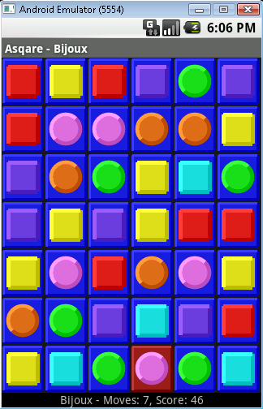

About Asqare
About Asqare
Swap colored sprites in this puzzle game to make sprites vanish.
When stuck, make a negative-scoring move! The game offers two game modes and
manages a list of current games that you can pause and recall at any time.
This game was first developed on 2008 for Android 1.0!
It was designed to run efficiently on the limited phone hardware we had back then.
As such, graphics and animations are kept simple. And the good news is that on today's modern phones,
that means a game that is efficient and uses very little graphics and CPU power, thus little battery. Yeah!

Enjoy!

Game List Screen
The game opens on the game list screen that lets you start new games or continue previously played ones.
Since the games are not timed, you can always abandon a game and continue it later.
To get started, press the "New Game" button on the game list screen and select one of the two different game modes available
Bijoux or Bée.
In the top corner of the screen is a 3-dot icon menu to access the settings.
This lets you configure the vibration mode as well as change the visual theme of the games.
Bijoux
In this game mode, the screen is covered with colored sprites (squares or circles).
The goal is to align 3 or more sprites of the same shape and color in a row to form a sequence.
When an adjacent sequence of the same shape and color contains at least 3 aligned sprites,
the sequence is removed and vanishes from the board.
New sprites fall from the top, filling the empty space.
If they also align to form a sequence with 3 or more similar aligned sprites, they also vanish, forming a chain.
Points are awarded for each sprite removed using a
Fibonacci sequence:
1 point for the first sprite, then 2, then 3, then 5, then 8, etc.
Thus the minimum number of points per sequence removed is 6 (1+2+3),
and that score increases geometrically as more similar sprites are removed at the same time.
It is thus in your best interest to maximize the number of sprites that get removed at the same time!
In this game mode, there are no levels, and the game never ends as you can never get stuck:
you can always swap sprites around. However if the swapped sprite does not result in a sequence removal,
there's a penalty and you loose 10 points on your current score!
That's pretty significant, so it's in your best interest to use that only strategically.
The bottom of the board displays the number of moves made so far, the current score, and a ratio:
the ratio is the current score divided by the number of moves.
One way to play is to ignore the actual score and focus on the ratio itself: how high can you go?
Bée
In this game mode, the screen is covered with colored circles.
Although this game mode looks visually similar to the previous one, the mechanics and goals are very different.
When a circle is selected, all the adjacent circles of the same color blink, as they are selected too.
When this selected area is selected again, all the circles collapse and vanish.
The area must contain at least 2 circles for it to go away.
This game mode has no levels either.
However you can quickly get in a situation where it is not possible to find areas
with 2 or more circles of the same color, in which case the game is finished.
The trick however is that... there is no indication that the game is impossible to continue!
There is no computer nanny giving 3 stars when you can't play anymore.
It's up to you to realize you have exhausted all your moves. Or... have you? Maybe you missed one...
Credits
Flower visual theme by Dave Kaufman.
Privacy Policy
Alf-Labs Android App Privacy Policy
The application complies with the privacy and security policies set by the Android Play Store.
The application does not collect nor transmit personal or sensitive user data.
The application does not use any analytics service, nor does it collect usage information, nor crash reports.
Google Play, the Google Play logo are trademarks of Google LLC.